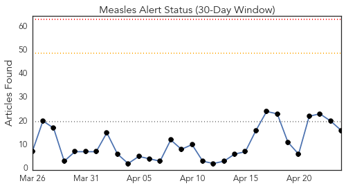
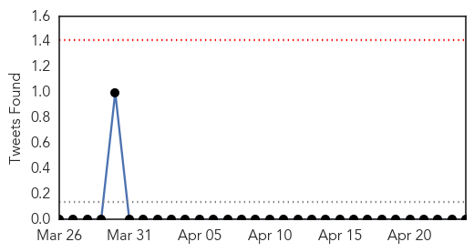
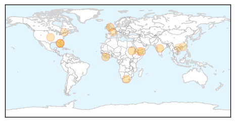
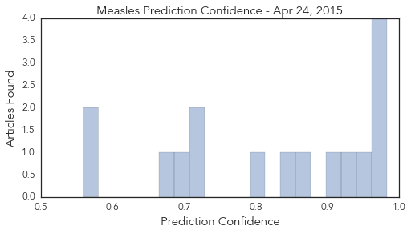

Measles
30-Day Web Trend
0 alerts, 0 warnings

30-Day Twitter Trend
0 alerts, 0 warnings

Article Locations
Article Confidences
Top Articles:
- 0.983
- Doctor turns away new patients without measles vaccine
- 0.976
- News Scan for Apr 23, 2015
- 0.970
- Winnipeg woman contracted measles while travelling in Africa
- 0.964
- UNICEF, partners support mass vaccination campaign in Sudan --China Economic Net
- 0.945
- Immunization drive under way for 3 million children in Ebola-hit countries
- 0.940
- Manitoba's Second Case of Measles Reported
- 0.899
- Second case of measles reported
- 0.870
- In Our View: A Dose of Prevention
- 0.837
- Yemen: UN agency warns of deteriorating health situation amid ongoing fighting
- 0.809
- One child in five still not vaccinated, says WHO
- 0.725
- WHO promotes vaccination to eradicate measles
- 0.722
- Guest Column: Skepticism over vaccines a growing problem
- 0.703
- Adults urged to make sure they get anti-measles jabs as cases rise
- 0.683
- UN mulls sending staff back to Yemen
- 0.578
- Vietnam observes WHO Immunisation Week
- 0.559
- Progress towards global vaccination targets 'far off track'
Top Tweets:
-
No tweets found for Apr 24, 2015
Meningitis
30-Day Web Trend
3 alerts, 0 warnings

30-Day Twitter Trend
1 alerts, 0 warnings

Article Locations

Article Confidences

Top Articles:
- 0.991
- الاخبار المصورة
- 0.990
- Niger meningitis: Vaccination starts after schools closure
- 0.989
- Niger meningitis death toll rises to 129: minister
- 0.982
- Niger battles deadly meningitis epidemic
- 0.951
- Mass vaccination starts
- 0.915
- Meningitis puts young people at risk
- 0.787
- World's 1st Malaria Vaccine Only Works In A Third Of Cases; Creator Still Insists It's Worthy Of Worldwide Application
- 0.783
- Malaria vaccine is a letdown but could still reduce cases
- 0.772
- Malaria vaccine a letdown, but could reduce cases - study
- 0.748
- First malaria vaccine for children could be recommended for use by autumn
- 0.723
- GlaxoSmithKline : Malaria vaccine candidate has demonstrated efficacy over 3-4 years of follow-up
- 0.717
- Doctor: Vaccines result in healthy immune system
- 0.684
- Final trial results of the world's most advanced malaria vaccine announced
- 0.626
- Hope over child malaria vaccine tests
- 0.564
- Malaria vaccine given green light by EU regulators
- 0.548
- Local charity highlights global project on World Meningitis Day
- 0.538
- Niger: Niger battles deadly meningitis epidemic
- 0.519
- Malaria vaccine candidate promising; could potentially prevent disease in millions
Top Tweets:
-
No tweets found for Apr 24, 2015